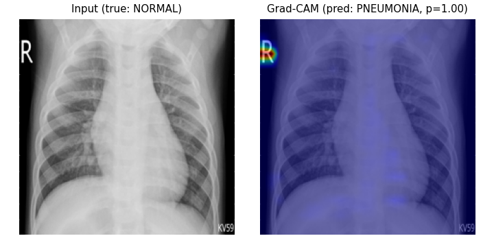
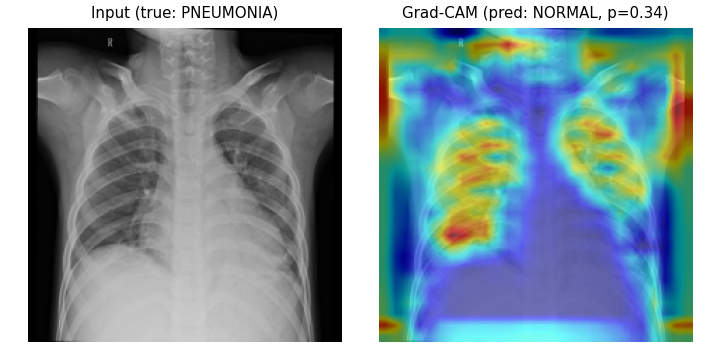

Honors case study
A pneumonia classifier that scores well in the hospital it was trained in — and a quantitative audit of why it shouldn't be trusted anywhere else. Three architectures, trained on one pediatric institution, tested without retraining on two independent adult-population sites.
All three models trained on Kaggle, evaluated unmodified on two external sites
Best in-domain AUC-ROC
0.992
ResNet-50, Kaggle test set (n=880)
Worst external AUC-ROC
0.512
Baseline CNN on OpenI — 95% CI 0.469–0.556, indistinguishable from chance
Correct predictions not looking at lungs
74–81%
Grad-CAM vs. lung-segmentation overlap, all 3 architectures
Held-out Kaggle test set, patient-level split, n=880 — McNemar's test confirms transfer learning wins (p<0.001), but ResNet-50 vs. DenseNet-121 is not significant (p=0.19)
| Model | Accuracy | Precision | Recall | AUC-ROC |
|---|---|---|---|---|
| Baseline CNN (from scratch) | 0.936 | 0.968 | 0.940 | 0.975 |
| ResNet-50 (transfer) | 0.972 | 0.970 | 0.990 | 0.992 |
| DenseNet-121 (transfer) | 0.964 | 0.965 | 0.984 | 0.991 |
Same trained models, no retraining, evaluated on NIH ChestX-ray14 and Indiana University/OpenI
Grad-CAM attention vs. a pretrained lung-segmentation model, full test set
Mean Grad-CAM / lung overlap
12–16%
Across all 3 models — near-100% would mean genuine lung-focused attention
Cases under 30% overlap cutoff
74–81%
Of correctly classified cases — shortcut reliance is the median case
Border/text-region masking — accuracy drop when the outer 10% is blanked
A true-normal chest X-ray predicted pneumonia at p=1.00 — attention sits entirely on a corner laterality marker, not lung tissue


shortcut_driven ~ age_group + log(image area) + aspect ratio + text-marker proxy — is shortcut reliance explained by pediatric-vs-adult age, or a more measurable proxy?
| Model | n | age_group | resolution | text marker | overall model |
|---|---|---|---|---|---|
| Baseline CNN | 60 | n.s. (p=0.54) | sig. (p=0.04) | n.s. (p=0.52) | — |
| ResNet-50 | 188 | sig. (p=0.02) | sig. (p=0.01) | sig. (p=0.04) | p=1.4×10⁻¹¹ |
| DenseNet-121 | 194 | n.s. (p=0.36) | n.s. (p=0.11) | n.s. (p=0.28) | p=6.1×10⁻¹⁸ |
"Age group" is not a consistent predictor of shortcut reliance across architectures. Where a factor is significant, it's resolution and/or detected artifacts — measurable proxies, not an unexplained institutional label.